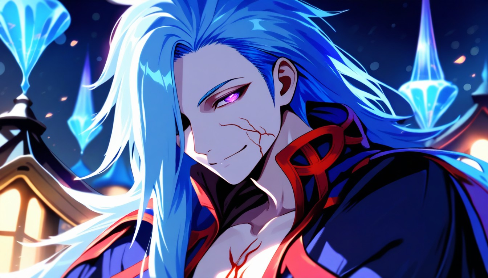
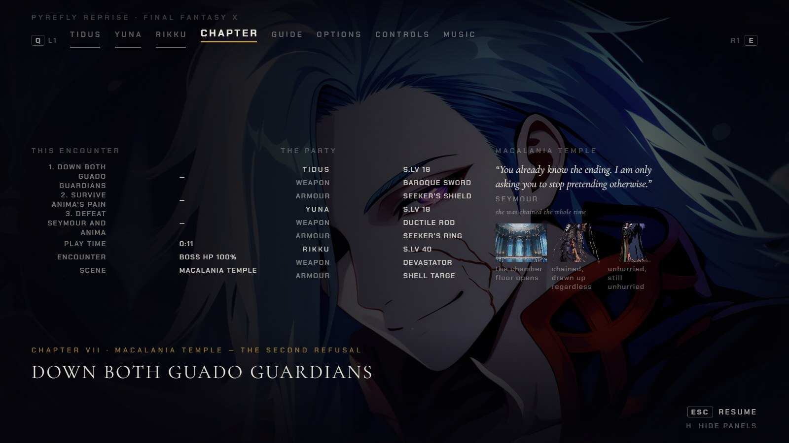
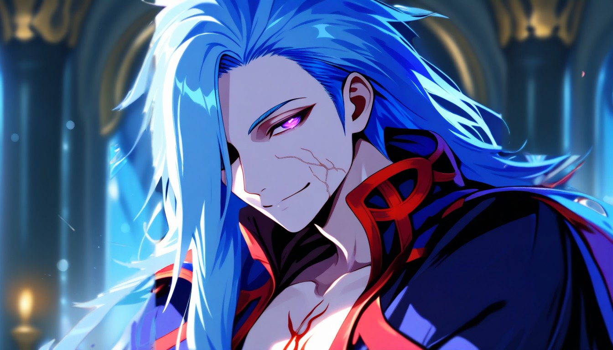
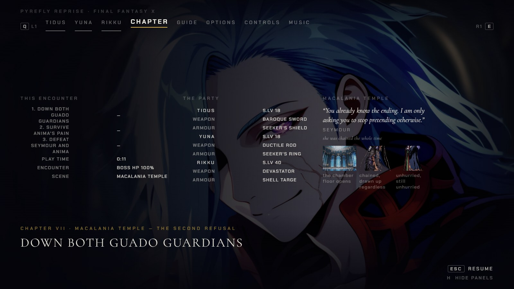
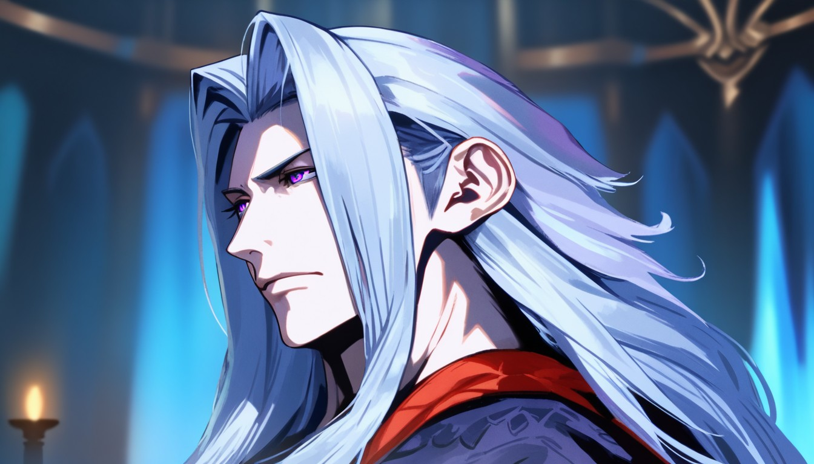
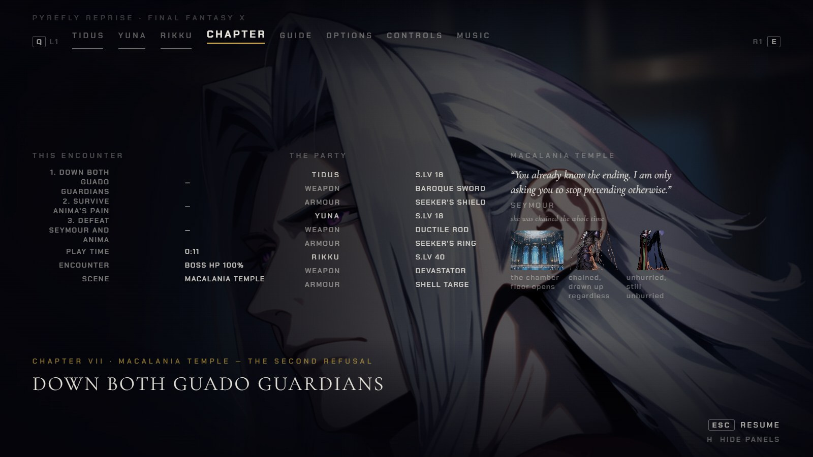

Chapter VII — the pause plate, redone: pick one
Macalania Temple · FFX only · options only, nothing installed · pause captures: real GPU, the plate served in the page only
One question: which painting should Chapter VII show on its pause CHAPTER tab? The installed plate scored 6 because its background is a village with lantern-lit rooftops, not the temple, and its facial veins read as a red cheek scar. You approved the other six Chapter VII paintings on 2026-09-25; this is the one left. A pick approves only what you name.
The plate (1344×768, shown at 0.42)
1:1 face (no scaling)
Pause CHAPTER tab, 1600×900 (real capture)



Mouth and eye pixels are identical to the installed plate.


